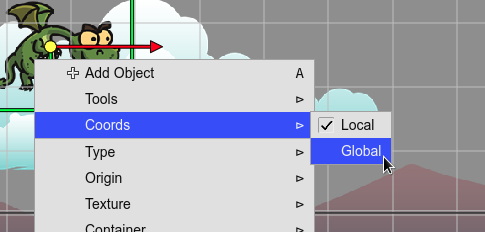
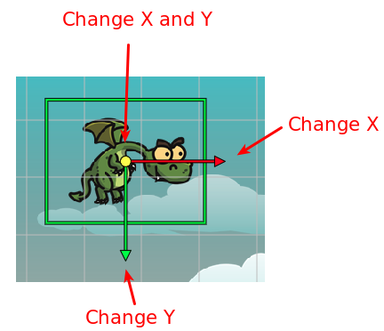

Manipulation tools
Contents
The manipulator tools are in-scene tools that allow changing properties of the objects.
Each tool has a command to activate/deactivate it. You can execute the command using a key, the context menu, or the Main toolbar.
You can activate one tool or the time. Or deactivate the tool.

Coordinates
Some tools can be used in a local or global coordinates. You can change the coords in the Coords menu of the context menu:
Translate tool
This tool allows you to move the objects on the screen. It affects the X and Y properties.
You can activate it with the T key, or in the context menu or the Main toolbar.
Drag the red arrow to change the X, and the green arrow to change the Y.
Scale tool
Activate this tool to change the scale of an object. You can activate it in the context menu, the Main toolbar, or with the S key. Keep pressing the Shift key if you want to scale proportionally.
Rotate tool
This tool changes the angle of the object. You can activate it in the context menu, the Main toolbar, or with the R key.
Origin tool
With this tool, you can edit the origin of an object. You can activate it in the context menu, the Main toolbar, or with the O key.
In Phaser v3, the rotation pivot of containers is fixed at x=0, y=0. You cannot change it. However, the origin tool simulates a change of the pivot by moving around the children of the container but keeping the same global position.
Resize tool
This tool allows for changing the size of some objects like TileSprite, Rectangle, and Ellipse. You can activate it in the context menu or with the Z key. Resize the object is not the same of scaling it.
Polygon tool
The Polygon tool (that you can activate with the Y key) shows the polygon’s points in the scene. It allows you:
Change the position of a point: drag the point with the mouse cursor.
Delete a point: move the mouse cursor over the point and press the Delete key (or double click). When the cursor is over the point, it is painted in red color.

Add a new point: move the mouse cursor over a line. It shows a white handler under the cursor, you can drag it for creating a new point.
Arcade Physics Body tool
This tool allows changing the size and offset of an Arcade physics body. You can activate the tool in the scene context menu of by pressing the B key.
There are two type of bodies: circular and rectangular bodies. When you are editing a circular body, the tool shows the body’s circle, the center (offset), and the radius handlers:

If the object has a rectangular body, then the tool shows the offset and size handlers:

Select Region tool
This tool allows you to draw a region in the scene and select all objects inside that zone. You can select it in the toolbar, the context menu or by pressing the Shift+S keys. If you keep pressing the Ctrl key, the previous selected objects will remain selected.
Pan tool
This tool allows you to pan the scene. You can activate it with the Space key. When it is selected, the mouse cursor is shown with a “grabbing” icon, then you can click on the scene and drag it.
Also, you can pan the scene by pressing the Alt key and dragging the mouse. This method does not require to activate the Pan tool.